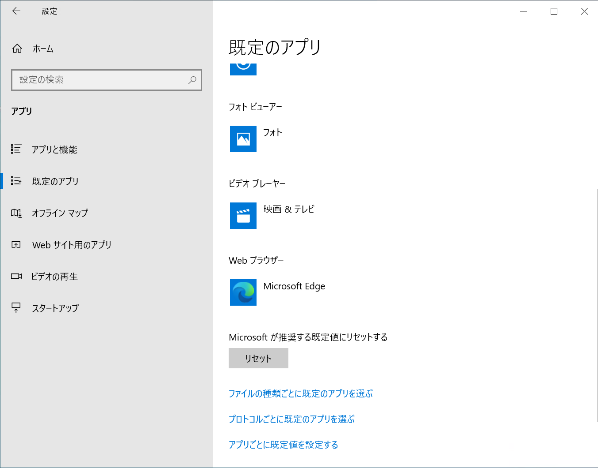
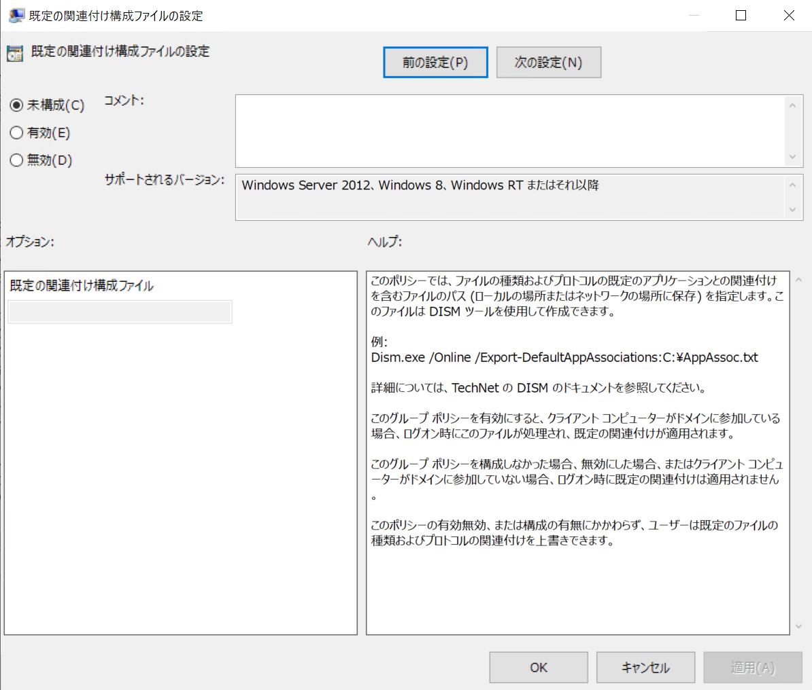

本記事はマイクロソフト社員によって公開されております。
こんにちは。Windows サポートチームの木村です。
マスター環境の作成や、組織内で利用するアプリケーションを変更する場合などに、既定のアプリの設定を変更したいことがあるかと存じます。
今回は Windows 10 の 既定のアプリの設定および配布方法についてご案内を致します。
目次
- 設定を行う方法
1. ユーザーによる手動変更
2. グループ ポリシーを使用する
3. DISM コマンドで既定のアプリの初期設定をインポートする
4. 設定ファイルの準備方法 - グループ ポリシーと DISM コマンドのちがい
- 非推奨となる設定方法
1. レジストリの直接編集
2. assoc コマンドと ftype コマンドについて - よくある質問
Q1. 既存ユーザーに 1 度だけ既定のアプリの設定を反映させる方法を教えてください。
Q2. コマンドを用いて既定のアプリの設定を変更する方法を教えてください。
Q3. 一部の既定のアプリの設定のみを変更する方法を教えてください。
Q4. なぜ既定のアプリをレジストリの直接編集によって変更することができないのでしょうか。 - 関連情報
設定を行う方法
1. ユーザーによる手動変更
設定画面の [アプリ] > [既定のアプリ] の項目から既定のアプリの設定を確認、変更することが可能です。

上の画面では、よく使用される以下の 6 つの項目に関連した既定のアプリの設定を変更することが可能です。
- メール
- マップ
- 音楽プレーヤー
- フォト ビューアー
- ビデオ プレーヤー
- Web ブラウザー
このほかに、以下の項目を用いることで、既定のアプリの設定をより詳細に変更することが可能です。
[ファイルの種類ごとに既定のアプリを選ぶ]
拡張子ごとに既定のアプリの設定を変更することが可能です。
(使用例) .jpg を開くアプリをペイントからフォトに変更する。[プロトコルごとに既定のアプリを選ぶ]
各プロトコルごとに既定のアプリの設定を行うことが可能です。
(例) メール アドレスをクリックしたときに起動するアプリを メール アプリから Outlook に変更する。
2. グループ ポリシーを使用する
グループ ポリシーを用いることで既定のアプリの設定を配布することが可能です。
[コンピューターの構成] > [管理用テンプレート] > [Windows コンポーネント] > [エクスプローラー]
[既定の関連付け構成ファイルの設定] : 有効
[既定の関連付け構成ファイル] : 設定ファイルのフルパスを入力してください。
※ 設定ファイルのご用意については、後述の “4. 設定ファイルの準備方法” を参照ください。

本ポリシーを適用する際には、ローカル グループ ポリシーから設定をする場合にも、ドメインに参加している必要がございます。
このことはグループ ポリシーの注意書きにも以下のように注意書きがございます。
– 該当箇所引用 –
このグループ ポリシーを構成しなかった場合、無効にした場合、またはクライアント コンピューターがドメインに参加していない場合、ログオン時に既定の関連付けは適用されません。
なお、ポリシーにて選択したフルパス上に設定ファイルが存在しなくなったときや、アクセスができない場合、設定は反映されません。
3. DISM コマンドで既定のアプリの初期設定をインポートする
DISM コマンドを使用することで、新規ユーザーの既定のアプリの設定を変更することが可能です。
例えば、現在ログオンしている環境に C:\temp 配下に存在している Associations.xml という名前の設定ファイルをインポートする場合には、管理者権限で実行したコマンド プロンプトから以下のコマンドを実行します。
DISM /online /Import-DefaultAppAssociations:C:\temp\Associations.xml 設定のインポート方法の詳細につきましては、弊社の公開情報をご参考ください。
(参考) 既定のアプリケーションの関連付けをエクスポートまたはインポートする
https://docs.microsoft.com/ja-jp/windows-hardware/manufacture/desktop/export-or-import-default-application-associations
本手順の注意事項として、OS のアップグレードを実行した際には OS の既定の設定が上書きされてしまいます。
そのため、OS のアップグレード時には SetupComplete.cmd を用いてアップグレード直後に再度設定を行うといった方法でこの動作を回避することが可能です。
(参考) カスタム スクリプトを Windows セットアップに追加する
https://docs.microsoft.com/ja-jp/windows-hardware/manufacture/desktop/add-a-custom-script-to-windows-setup
4. 設定ファイルの準備方法
既定のアプリの設定を手動以外の方法で設定したり配布をするためには、既定のアプリの設定ファイルが必要となります。
本項ではグループ ポリシーや DISM コマンドによるインポートの際に利用する設定ファイルの作成方法をご紹介致します。
手順 1) 1. ユーザーによる手動変更 の方法を用いて、配布したい既定のアプリの設定を行います。
手順 2) 管理者権限にて実行したコマンド プロンプト上から DISM コマンドを実行します。
例えば、現在ログオンしているユーザーの既定のアプリの情報を C:\temp 配下に Associations.xml として出力する場合は以下のようなコマンドを実行します。
DISM /online /Export-DefaultAppAssociations:C:\temp\Associations.xml 以上の手順によって “手順 1” で予め設定をした既定のアプリの設定情報が、設定ファイルとして出力されます。
ここで出力された設定ファイルは、そのままグループ ポリシーや DISM コマンドを用いて配布することが可能です。
本手順については以下の公開情報に詳細がございますのでご確認ください。
(参考) 既定のアプリケーションの関連付けをエクスポートまたはインポートする
https://docs.microsoft.com/ja-jp/windows-hardware/manufacture/desktop/export-or-import-default-application-associations
グループ ポリシーと DISM コマンドの違い
1. 適用範囲の違い
| グループ ポリシー | DISM コマンド | |
|---|---|---|
| 新規ユーザー | 〇 | 〇 |
| 既存ユーザー | 〇 | × |
〇 : 設定が反映される
× : 設定が反映されない
グループ ポリシーは新規ユーザーと既存ユーザーの両方に設定が反映されます。
しかし、DISM コマンドを用いた設定の配布は、DISM コマンドでインポートして以降の新規ユーザーにのみ反映されます。使い分けるケースとしては、現在運用中の環境に対して設定を配布したい場合にはグループ ポリシーを、これから配布するためのマスター環境を作成している際には DISM コマンドを用いるといった使い分けが考えられます。
2. ユーザーが自由に変更できるかどうかの違い
| グループ ポリシー | DISM コマンド | |
|---|---|---|
| 新規ユーザー | × | 〇 |
| 既存ユーザー | × | - |
※ 既存ユーザーには DISM コマンドを用いた設定が反映されないため “-“ としています。
〇 : 変更可能
× : 変更不可
グループ ポリシーはユーザーのサインイン時、および Explorer.exe の再起動時に設定されるものとなります。
そのため、現在操作中の状態においては既定のアプリの設定を変更することが可能でございますが、ログオフ・ログオンおよび Explorer.exe の再起動が行われた際に、設定ファイルを用いて配布した設定が上書きされてしまいます。
一方で DISM コマンドを用いる方法の場合、新規ユーザーの初期値を設定するのみとなりますため、その後にユーザーが自由に既定のアプリの設定を変更することが可能となります。
非推奨となる設定方法
1. レジストリの直接編集
Windows 8 以降ではレジストリの直接編集にて既定のアプリの設定を変更した場合、既定のアプリのリセットが発生し、OS の推奨の値が設定されるようになりました。
詳細については以下の公開情報をご参考ください。
(参考) 既定のアプリのリセットについて
https://jpwinsup.github.io/blog/2021/04/22/UserInterfaceAndApps/ResetFileAssociationsSubject/
2. assoc コマンドと ftype コマンドについて
上述のように、Windows 8 以降はレジストリの直接編集ができなくなるなど、既定のアプリの動作に変更が行われました。この変更によって、従来用いられていた assoc コマンドと ftype コマンドを用いて設定した値が、正しく参照されない場合がございます。
よくある質問
Q1. 既存ユーザーに 1 度だけ既定のアプリの設定を反映させる方法を教えてください。
OS 標準の方法ではご要望を実現できる方法のご用意がございません。
既存ユーザーに対し、設定を配布する方法はグループ ポリシーのみとなります。そのため、もしユーザーにて自由に変更することを希望されます場合には、ユーザー自身に手動で設定を変更いただく必要がございます。
もしユーザー様へ設定の変更のご依頼が難しく、管理者が配布する必要がございます場合には弊社までお気軽にご相談ください。
Q2. コマンドを用いて既定のアプリの設定を変更する方法を教えてください。
Windows 8 からの OS ではコマンドを用いて既定のアプリの設定を変更する方法はご用意がございません。
Windows 7 までは ftype および assoc コマンドを用いることでコマンドによる変更を行うことができました。
しかし、Windows 8 からは既定のアプリケーションの設定に関する仕様変更の影響により使用できなくなりました。
(参考) Windows 8 でプログラムからファイルの種類とプロトコルの関連付けができない
http://support.microsoft.com/kb/2846141/ja
Q3. 一部の既定のアプリの設定のみを変更する方法を教えてください。
グループ ポリシーを用いて設定の配布を行う場合に限り、設定ファイルの不要な項目を削除することが可能でございます。例えば pdf ファイルに対する既定のアプリの設定を残すことで、それ以外の既定のアプリの設定の変更を可能にしつつ、pdf ファイルのみの設定を配布することが可能です。
ただし、DISM コマンドを用いて設定ファイルのインポートを行うことはできません。不要な項目を削除した設定ファイルをインポートしてしまうと、新規ユーザーの初回ログオン時に、削除した項目に対して 「既定のアプリがリセットされました」 という通知が発生することがございます。
Q4. なぜ既定のアプリをレジストリの直接編集によって変更することができないのでしょうか。
Windows 8 からは、既定のアプリの設定の整合性を確認する動作がございます。システムを介さず直接レジストリの値を変更した場合、OS としては情報の不整合として検知します。
その結果、「既定のアプリがリセットされました」 という通知が発生し、OS が推奨するアプリが設定されることがございます。
関連情報
既定のアプリのリセットについて
https://jpwinsup.github.io/blog/2021/04/22/UserInterfaceAndApps/ResetFileAssociationsSubject/既定のアプリをグループ ポリシーで固定する方法
https://jpwinsup.github.io/blog/2020/12/02/UserInterfaceAndApps/how-to-set-gpo-about-DefaultApps/「どのアプリで開きますか？」 というメッセージについてと表示抑止方法のご案内
https://jpwinsup.github.io/blog/2021/05/29/UserInterfaceAndApps/WhatAppsDoYouWantToOpen/Windows 8 でプログラムからファイルの種類とプロトコルの関連付けができない
http://support.microsoft.com/kb/2846141/ja既定のアプリケーションの関連付けをエクスポートまたはインポートする
https://docs.microsoft.com/ja-jp/windows-hardware/manufacture/desktop/export-or-import-default-application-associations
本情報が、ご利用者様の一助となりますと幸いでございます。
※内容は予告なく変更される場合がございますことを何卒ご了承ください。